I recently had the pleasure of visiting the build site of one of our customers in Blanco, TX. The Pawly family bought an AECT 3500 CEB machine (AECT 3500) back in 2009 and they've been producing beautiful CEBs with it ever since. This year, Trae Pawly is building his forever home on the family ranch using the dirt mined right there on their property, so I dropped in to check out their process. Because they have their own excavator, Trae is able to dig up the caliche-based soil right there on site.
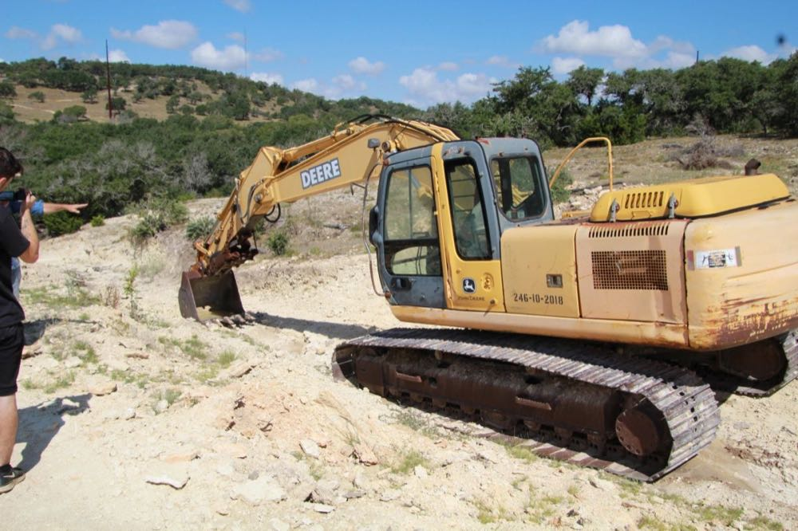
Once excavated, Trae and his dad, Tommy, run the soil through a vibrating screener to get the large chunks of caliche and rocks out of the material.
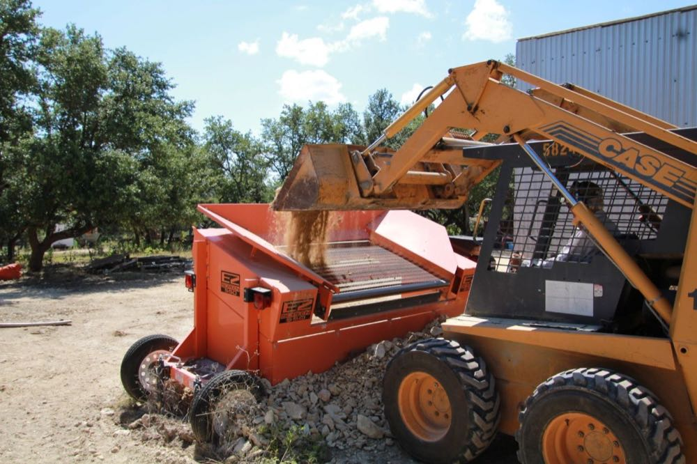
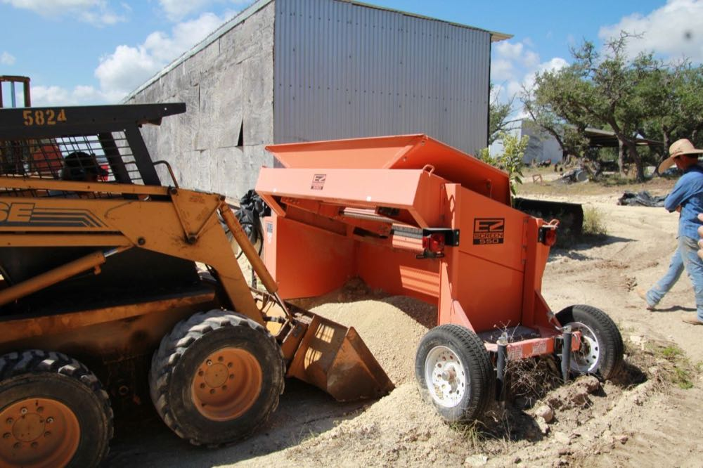
The Pawlys don't add any stabilizer to their soil because it already contains naturally occurring lime...so the blocks are effectively lime stabilized. They dampen a pile of soil and cover it up with plastic the day before producing blocks, in order to get the right moisture. So, there's no need to use a mixer to blend stabilizers or moisture into the soil. Once it goes through the screener it's ready to go right into the AECT 3500 CEB machine!
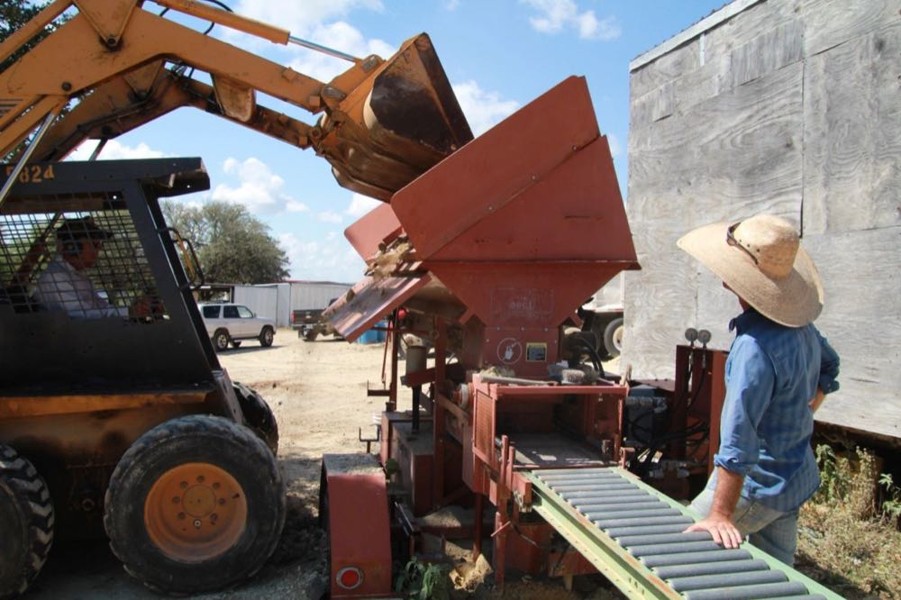
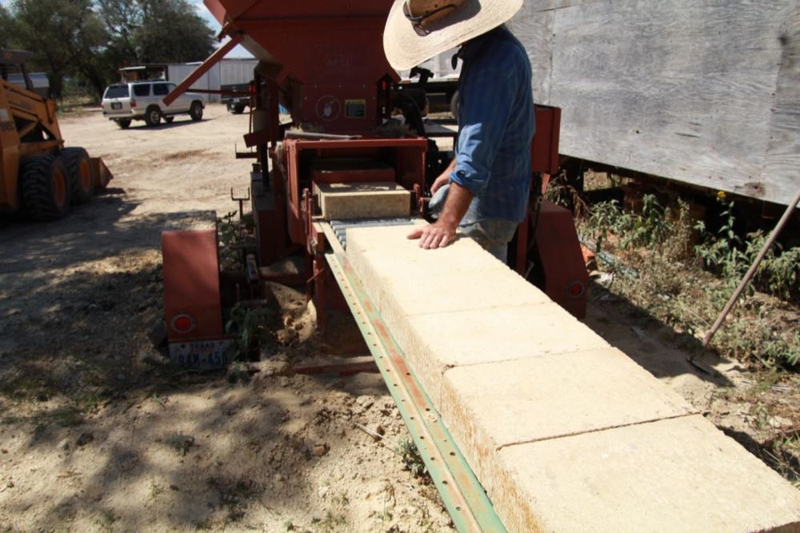
After making some nice CEBs, we moved over to the build site. The house is on top of a hill overlooking the beautiful Texas hill country. It's easy to see why Trae chose this spot to build his home...and the natural compressed earth blocks are going to complement the surroundings very nicely.
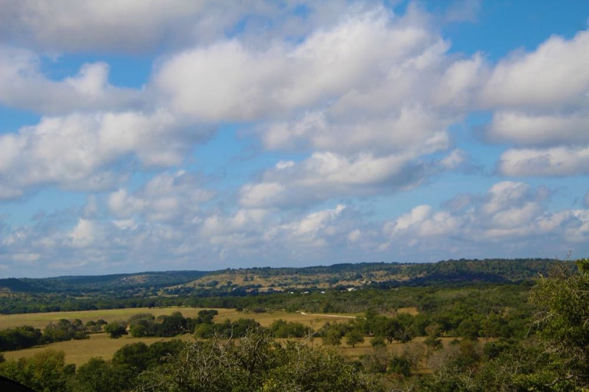

As AECT recommends, the Pawlys use their block soil as the base for their slurry for joining the blocks. They sift the native caliche soil down to about 1/8" then add in some red sand. Their slurry ratio is two parts of the caliche base with one part of the red sand. They mix the material in a small concrete mixer, adding in enough water to produce a milkshake consistency.
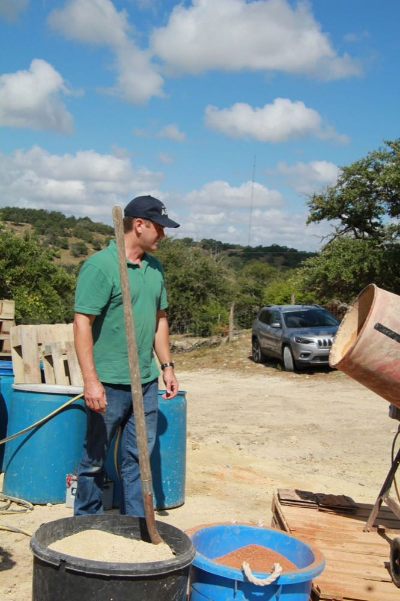
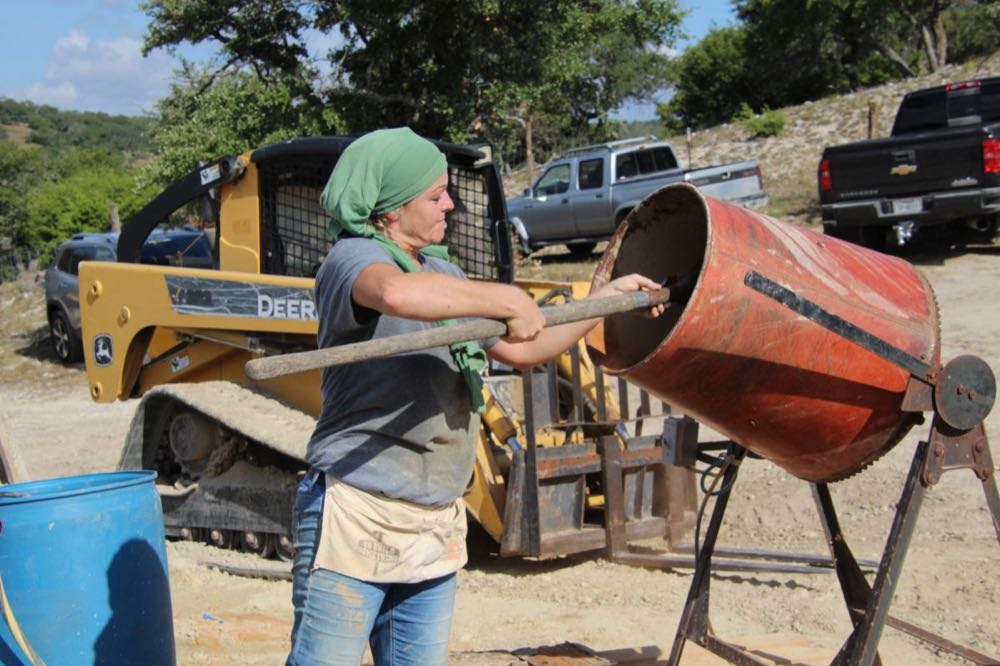
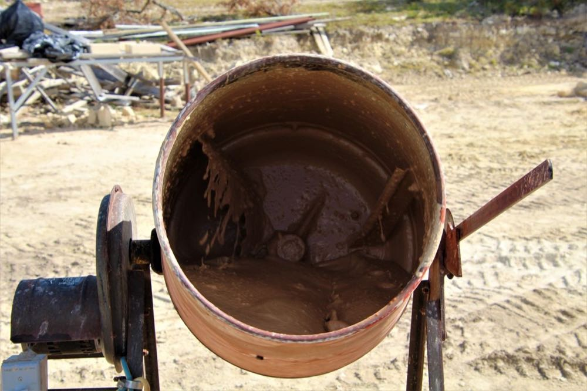
Once the slurry is prepared, it's time to lay some blocks. The Pawlys have invented a device which allows them to lay five 10"x14"x3.5" blocks at once...that's 180 lbs. of block! It's a pretty big help even when the wall is at hip level...but it's especially helpful once you have to lift the blocks above your head and/or work off of scaffolding. With this device, a tractor can do all the heavy lifting, and all the block layer has to do is stand there and release the blocks from the tool.
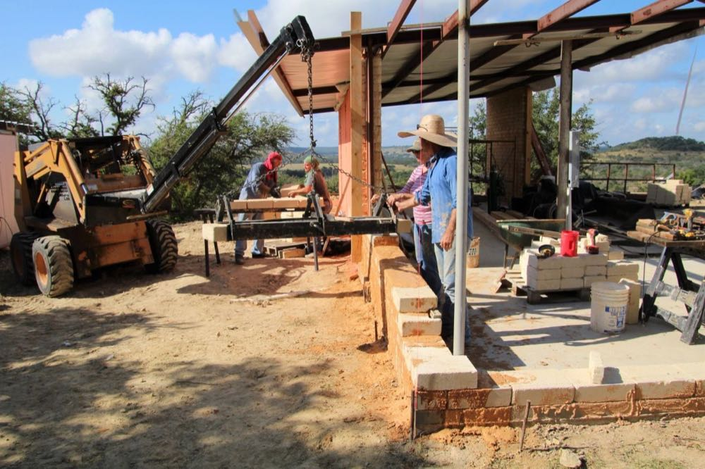
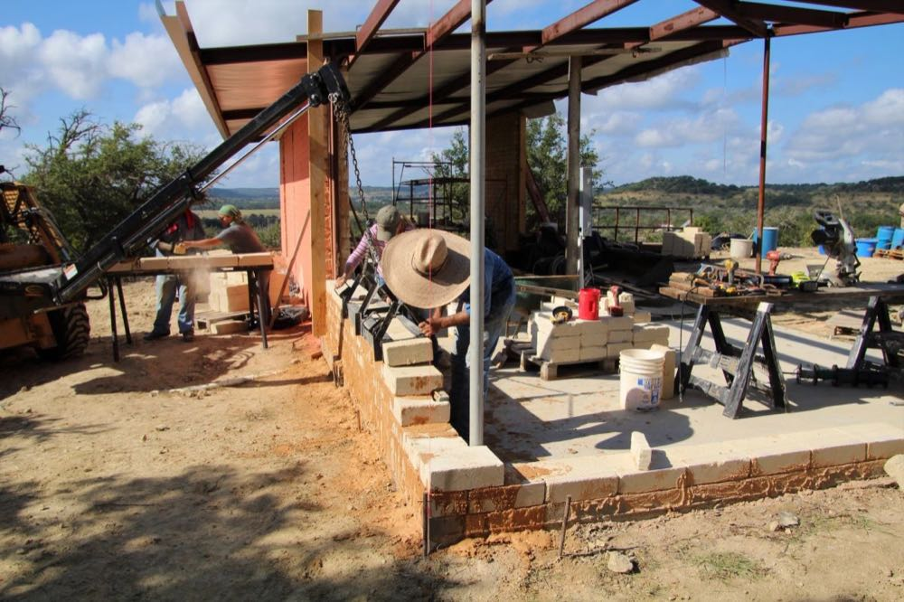
It's always great to see someone using AECT machines and building with earth blocks...and it's an extra special treat to see someone building with un-stabilized earth blocks, as it's not always in the cards for most people. We had a great day watching the Pawly's process. Trae is well on his way toward creating a masterpiece and we can't wait to see how his home turns out. Keep checking back on www.AECTearthblock.com for updates on this project.